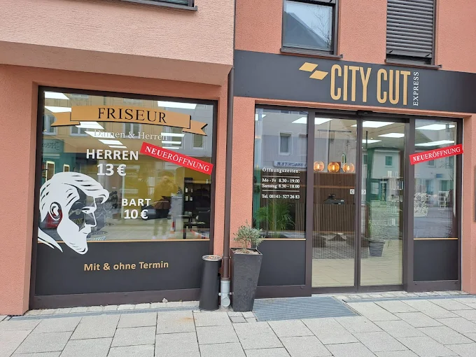
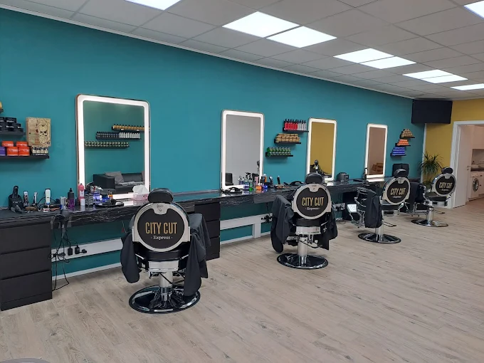
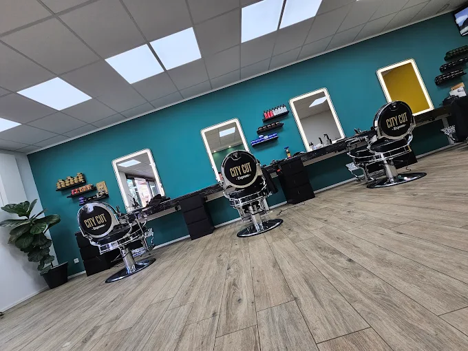
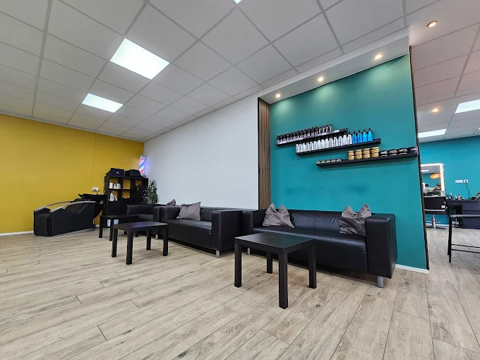

Herrenhaarschnitt
Saubere Schnitte, schnelle Termine und ein Ergebnis, das im Alltag genauso gut funktioniert wie zu besonderen Anlaessen.
City Cut Express in der Schoengeisinger Strasse verbindet schnelle Termine, freundlichen Service und ein gepflegtes Salonkonzept. Ob klassischer Herrenhaarschnitt, Damenhaarschnitt, Kinderhaarschnitt oder Styling, hier steht ein sauberer Schnitt und ein angenehmer Besuch im Mittelpunkt.

City Cut Express ist ein moderner Friseursalon in Fuerstenfeldbruck mit Fokus auf saubere Ergebnisse, kurze Wege und freundlichen Service. Die zentrale Lage, die langen Oeffnungszeiten und die unkomplizierte Terminmoeglichkeit machen den Salon besonders alltagstauglich.
Der Auftritt von City Cut Express steht fuer einen schnellen, unkomplizierten Friseurbesuch in angenehmer Atmosphaere. Viele Kundinnen und Kunden heben besonders die freundliche Art, faire Preise und die kurzen Wartezeiten hervor.
Zum Angebot von City Cut Express gehoeren klassische Schnitte, moderne Styles und weitere Hair-&-Styling-Leistungen fuer unterschiedliche Ansprueche.
Saubere Schnitte, schnelle Termine und ein Ergebnis, das im Alltag genauso gut funktioniert wie zu besonderen Anlaessen.
Individuelle Schnitte und Styling in moderner Salonatmosphaere, abgestimmt auf Haarstruktur und persoenlichen Look.
Geduldiger und freundlicher Service fuer die juengsten Gaeste, damit auch der Friseurbesuch entspannt bleibt.
Je nach Wunsch sind auch weitere Hair-&-Styling-Services moeglich, darunter Coloration und moderne Finishs.
Hier finden Sie die wichtigsten Preise laut Aushang im Salon. Je nach Haarlaenge und Aufwand koennen Leistungen individuell abweichen.
Stand laut Preisfoto am Salon. Änderungen und individuelle Aufschläge je nach Haarlaenge oder Aufwand sind möglich.
Die Bilder zeigen den modernen Innenraum, die hellen Bedienplaetze und den gepflegten Wartebereich von City Cut Express.



Viele Kundinnen und Kunden loben vor allem die freundliche Art, die schnellen Abläufe und das starke Preis-Leistungs-Verhaeltnis.
Ist schnell und macht krasse Schnitte, ist auch gar nicht so teuer, also ich wuerde es jedem empfehlen.
War jetzt das 2x im Salon, Mitarbeiter sehr freundlich. Wartezeit bei Termin hatte ich bei beiden Malen keine. Die Friseurin ist Griechin und schneidet super gut.
Ein grosses Dankeschoen an den Friseur Aram, der mit viel Geduld und Einfuehlungsvermoegen meinem kleinen Sohn die Haare schnitt. Tolles Team und tolle Preise.
Wenn die dich kennenlernen und moegen, dann geben die alles was sie koennen, um deinen Haarschnitt gut zu machen.
Der Chef kann auf jeden Fall sehr gut schneiden und war sehr freundlich.
Super nett und zuvorkommend, top Herren-Haarschnitt und noch dazu super guenstig. Also von mir alle Daumen hoch, macht weiter so.
Sehr vertrauenswuerdiger Friseur, top Schnitt bekommen und ich bin sehr zufrieden.
Der beste, schnellste und guenstigste Friseur in ganz FFB. Die Mitarbeiter sind sehr nett, freundlich und hoeflich.
Gehe gerne hierher, wurde noch nie enttaeuscht.
Ich war heute mit meinem Sohn da und bin sehr zufrieden. Die Jungs waren sehr nett, schnell und konnten mit ihm sehr gut umgehen.
Tolles Preis-Leistungsverhaeltnis. War jetzt schon das vierte Mal dort und das nicht ohne Grund, kurze Wartezeiten und gute Arbeit.
Super Friseur, sehr nett. Man kann sich nicht beschweren, das Endergebnis bei mir sieht immer toll aus.
Mein Lieblingsfriseur. Schneidet schnell, gut und ohne Termin.
Sehr zufrieden mit dem Haarschnitt und dem Service.
Das war der schnellste Haarschnitt meines Lebens. Die Qualitaet passt absolut. Dazu ein sehr fairer Preis.
Preis-Leistung wirklich top. Boxerschnitt bei mir perfekt den Uebergang geschnitten. Sehr empfehlenswert.
Super zufrieden, nettes Personal, Preis-Leistung top. Kann ich nur weiterempfehlen.
Ist schnell und macht krasse Schnitte, ist auch gar nicht so teuer, also ich wuerde es jedem empfehlen.
War jetzt das 2x im Salon, Mitarbeiter sehr freundlich. Wartezeit bei Termin hatte ich bei beiden Malen keine. Die Friseurin ist Griechin und schneidet super gut.
Ein grosses Dankeschoen an den Friseur Aram, der mit viel Geduld und Einfuehlungsvermoegen meinem kleinen Sohn die Haare schnitt. Tolles Team und tolle Preise.
Wenn die dich kennenlernen und moegen, dann geben die alles was sie koennen, um deinen Haarschnitt gut zu machen.
Der Chef kann auf jeden Fall sehr gut schneiden und war sehr freundlich.
Super nett und zuvorkommend, top Herren-Haarschnitt und noch dazu super guenstig. Also von mir alle Daumen hoch, macht weiter so.
Sehr vertrauenswuerdiger Friseur, top Schnitt bekommen und ich bin sehr zufrieden.
Der beste, schnellste und guenstigste Friseur in ganz FFB. Die Mitarbeiter sind sehr nett, freundlich und hoeflich.
Gehe gerne hierher, wurde noch nie enttaeuscht.
Ich war heute mit meinem Sohn da und bin sehr zufrieden. Die Jungs waren sehr nett, schnell und konnten mit ihm sehr gut umgehen.
Tolles Preis-Leistungsverhaeltnis. War jetzt schon das vierte Mal dort und das nicht ohne Grund, kurze Wartezeiten und gute Arbeit.
Super Friseur, sehr nett. Man kann sich nicht beschweren, das Endergebnis bei mir sieht immer toll aus.
Mein Lieblingsfriseur. Schneidet schnell, gut und ohne Termin.
Sehr zufrieden mit dem Haarschnitt und dem Service.
Das war der schnellste Haarschnitt meines Lebens. Die Qualitaet passt absolut. Dazu ein sehr fairer Preis.
Preis-Leistung wirklich top. Boxerschnitt bei mir perfekt den Uebergang geschnitten. Sehr empfehlenswert.
Super zufrieden, nettes Personal, Preis-Leistung top. Kann ich nur weiterempfehlen.
Leicht gekuerzte Original-Bewertungen von Google.
City Cut Express
Schoengeisinger Str. 13
82256 Fuerstenfeldbruck
Der Salon befindet sich zentral in Fuerstenfeldbruck und ist schnell erreichbar.
Ob spontaner Besuch oder geplanter Termin, ueber das Formular kann schnell und unkompliziert Kontakt aufgenommen werden.